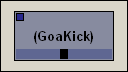

To
mute
a single machine, either
single-click the LED
in the upper-left
corner,
or right-click the machine, and select
mute from the pop-up menu
. Parenthesis will appear around the
machine name, and the machine box will darken to show the machine has been
muted. A check will also appear next to the word
mute
in the right-click pop-up menu indicating the new status.

Figure 3.9
Note
: A muted effect will block
all generator (and effect) signals linked into it.